Last updated: 2020-06-19
Checks: 7 0
Knit directory: misc/analysis/
This reproducible R Markdown analysis was created with workflowr (version 1.6.1). The Checks tab describes the reproducibility checks that were applied when the results were created. The Past versions tab lists the development history.
Great! Since the R Markdown file has been committed to the Git repository, you know the exact version of the code that produced these results.
Great job! The global environment was empty. Objects defined in the global environment can affect the analysis in your R Markdown file in unknown ways. For reproduciblity it’s best to always run the code in an empty environment.
The command set.seed(1) was run prior to running the code in the R Markdown file. Setting a seed ensures that any results that rely on randomness, e.g. subsampling or permutations, are reproducible.
Great job! Recording the operating system, R version, and package versions is critical for reproducibility.
Nice! There were no cached chunks for this analysis, so you can be confident that you successfully produced the results during this run.
Great job! Using relative paths to the files within your workflowr project makes it easier to run your code on other machines.
Great! You are using Git for version control. Tracking code development and connecting the code version to the results is critical for reproducibility.
The results in this page were generated with repository version f8037eb. See the Past versions tab to see a history of the changes made to the R Markdown and HTML files.
Note that you need to be careful to ensure that all relevant files for the analysis have been committed to Git prior to generating the results (you can use wflow_publish or wflow_git_commit). workflowr only checks the R Markdown file, but you know if there are other scripts or data files that it depends on. Below is the status of the Git repository when the results were generated:
Ignored files:
Ignored: .DS_Store
Ignored: .Rhistory
Ignored: .Rproj.user/
Ignored: analysis/.RData
Ignored: analysis/.Rhistory
Ignored: analysis/ALStruct_cache/
Ignored: analysis/figure/
Ignored: data/.Rhistory
Ignored: data/pbmc/
Untracked files:
Untracked: .dropbox
Untracked: Icon
Untracked: analysis/GHstan.Rmd
Untracked: analysis/GTEX-cogaps.Rmd
Untracked: analysis/PACS.Rmd
Untracked: analysis/Rplot.png
Untracked: analysis/SPCAvRP.rmd
Untracked: analysis/admm_02.Rmd
Untracked: analysis/admm_03.Rmd
Untracked: analysis/compare-transformed-models.Rmd
Untracked: analysis/cormotif.Rmd
Untracked: analysis/cp_ash.Rmd
Untracked: analysis/eQTL.perm.rand.pdf
Untracked: analysis/eb_prepilot.Rmd
Untracked: analysis/eb_var.Rmd
Untracked: analysis/ebpmf1.Rmd
Untracked: analysis/flash_test_tree.Rmd
Untracked: analysis/ieQTL.perm.rand.pdf
Untracked: analysis/m6amash.Rmd
Untracked: analysis/mash_bhat_z.Rmd
Untracked: analysis/mash_ieqtl_permutations.Rmd
Untracked: analysis/mixsqp.Rmd
Untracked: analysis/mr.ash_lasso_init.Rmd
Untracked: analysis/mr.mash.test.Rmd
Untracked: analysis/mr_ash_modular.Rmd
Untracked: analysis/mr_ash_parameterization.Rmd
Untracked: analysis/mr_ash_pen.Rmd
Untracked: analysis/nejm.Rmd
Untracked: analysis/normalize.Rmd
Untracked: analysis/pbmc.Rmd
Untracked: analysis/poisson_transform.Rmd
Untracked: analysis/pseudodata.Rmd
Untracked: analysis/qrnotes.txt
Untracked: analysis/ridge_iterative_02.Rmd
Untracked: analysis/ridge_iterative_splitting.Rmd
Untracked: analysis/samps/
Untracked: analysis/sc_bimodal.Rmd
Untracked: analysis/shrinkage_comparisons_changepoints.Rmd
Untracked: analysis/susie_en.Rmd
Untracked: analysis/susie_z_investigate.Rmd
Untracked: analysis/svd-timing.Rmd
Untracked: analysis/temp.RDS
Untracked: analysis/temp.Rmd
Untracked: analysis/test-figure/
Untracked: analysis/test.Rmd
Untracked: analysis/test.Rpres
Untracked: analysis/test.md
Untracked: analysis/test_qr.R
Untracked: analysis/test_sparse.Rmd
Untracked: analysis/z.txt
Untracked: code/multivariate_testfuncs.R
Untracked: code/rqb.hacked.R
Untracked: data/4matthew/
Untracked: data/4matthew2/
Untracked: data/E-MTAB-2805.processed.1/
Untracked: data/ENSG00000156738.Sim_Y2.RDS
Untracked: data/GDS5363_full.soft.gz
Untracked: data/GSE41265_allGenesTPM.txt
Untracked: data/Muscle_Skeletal.ACTN3.pm1Mb.RDS
Untracked: data/Thyroid.FMO2.pm1Mb.RDS
Untracked: data/bmass.HaemgenRBC2016.MAF01.Vs2.MergedDataSources.200kRanSubset.ChrBPMAFMarkerZScores.vs1.txt.gz
Untracked: data/bmass.HaemgenRBC2016.Vs2.NewSNPs.ZScores.hclust.vs1.txt
Untracked: data/bmass.HaemgenRBC2016.Vs2.PreviousSNPs.ZScores.hclust.vs1.txt
Untracked: data/eb_prepilot/
Untracked: data/finemap_data/fmo2.sim/b.txt
Untracked: data/finemap_data/fmo2.sim/dap_out.txt
Untracked: data/finemap_data/fmo2.sim/dap_out2.txt
Untracked: data/finemap_data/fmo2.sim/dap_out2_snp.txt
Untracked: data/finemap_data/fmo2.sim/dap_out_snp.txt
Untracked: data/finemap_data/fmo2.sim/data
Untracked: data/finemap_data/fmo2.sim/fmo2.sim.config
Untracked: data/finemap_data/fmo2.sim/fmo2.sim.k
Untracked: data/finemap_data/fmo2.sim/fmo2.sim.k4.config
Untracked: data/finemap_data/fmo2.sim/fmo2.sim.k4.snp
Untracked: data/finemap_data/fmo2.sim/fmo2.sim.ld
Untracked: data/finemap_data/fmo2.sim/fmo2.sim.snp
Untracked: data/finemap_data/fmo2.sim/fmo2.sim.z
Untracked: data/finemap_data/fmo2.sim/pos.txt
Untracked: data/logm.csv
Untracked: data/m.cd.RDS
Untracked: data/m.cdu.old.RDS
Untracked: data/m.new.cd.RDS
Untracked: data/m.old.cd.RDS
Untracked: data/mainbib.bib.old
Untracked: data/mat.csv
Untracked: data/mat.txt
Untracked: data/mat_new.csv
Untracked: data/matrix_lik.rds
Untracked: data/paintor_data/
Untracked: data/temp.txt
Untracked: data/y.txt
Untracked: data/y_f.txt
Untracked: data/zscore_jointLCLs_m6AQTLs_susie_eQTLpruned.rds
Untracked: data/zscore_jointLCLs_random.rds
Untracked: explore_udi.R
Untracked: output/fit.k10.rds
Untracked: output/fit.varbvs.RDS
Untracked: output/glmnet.fit.RDS
Untracked: output/test.bv.txt
Untracked: output/test.gamma.txt
Untracked: output/test.hyp.txt
Untracked: output/test.log.txt
Untracked: output/test.param.txt
Untracked: output/test2.bv.txt
Untracked: output/test2.gamma.txt
Untracked: output/test2.hyp.txt
Untracked: output/test2.log.txt
Untracked: output/test2.param.txt
Untracked: output/test3.bv.txt
Untracked: output/test3.gamma.txt
Untracked: output/test3.hyp.txt
Untracked: output/test3.log.txt
Untracked: output/test3.param.txt
Untracked: output/test4.bv.txt
Untracked: output/test4.gamma.txt
Untracked: output/test4.hyp.txt
Untracked: output/test4.log.txt
Untracked: output/test4.param.txt
Untracked: output/test5.bv.txt
Untracked: output/test5.gamma.txt
Untracked: output/test5.hyp.txt
Untracked: output/test5.log.txt
Untracked: output/test5.param.txt
Unstaged changes:
Modified: analysis/ash_delta_operator.Rmd
Modified: analysis/ash_pois_bcell.Rmd
Modified: analysis/lasso_em.Rmd
Modified: analysis/minque.Rmd
Modified: analysis/mr_missing_data.Rmd
Note that any generated files, e.g. HTML, png, CSS, etc., are not included in this status report because it is ok for generated content to have uncommitted changes.
These are the previous versions of the repository in which changes were made to the R Markdown (analysis/mr_ash_vs_lasso.Rmd) and HTML (docs/mr_ash_vs_lasso.html) files. If you’ve configured a remote Git repository (see ?wflow_git_remote), click on the hyperlinks in the table below to view the files as they were in that past version.
| File | Version | Author | Date | Message |
|---|---|---|---|---|
| Rmd | f8037eb | Matthew Stephens | 2020-06-19 | workflowr::wflow_publish(“mr_ash_vs_lasso.Rmd”) |
| html | c94d7bf | Matthew Stephens | 2020-06-12 | Build site. |
| Rmd | 94bd508 | Matthew Stephens | 2020-06-12 | workflowr::wflow_publish(“mr_ash_vs_lasso.Rmd”) |
library("mr.ash.alpha")
library("glmnet")Loading required package: MatrixLoaded glmnet 3.0-2This is to illustrate a setting where Fabio Morgante found lasso to work better than mr.ash. The simulation is based on his set-up, and then simplified. (Note that I have set the columns of \(X\) to have norm approximately 1 to make connections with the mr.ash paper easier.)
set.seed(123)
n <- 500
p <- 1000
p_causal <- 500 # number of causal variables (simulated effects N(0,1))
pve <- 0.95
nrep = 10
rmse_mrash = rep(0,nrep)
rmse_glmnet = rep(0,nrep)
rmse_ridge = rep(0,nrep)
for(i in 1:nrep){
sim=list()
sim$X = matrix(rnorm(n*p,sd=1),nrow=n)
B <- rep(0,p)
causal_variables <- sample(x=(1:p), size=p_causal)
B[causal_variables] <- rnorm(n=p_causal, mean=0, sd=1)
sim$B = B
sim$Y = sim$X %*% sim$B
E = rnorm(n,sd = sqrt((1-pve)/(pve))*sd(sim$Y))
sim$Y = sim$Y + E
fit_mrash <- mr.ash.alpha::mr.ash(sim$X, sim$Y,standardize = FALSE)
fit_glmnet <- cv.glmnet(x=sim$X, y=sim$Y, family="gaussian", alpha=1, standardize=FALSE)
#fit_ridge <- cv.glmnet(x=sim$X, y=sim$Y, family="gaussian", alpha=0, standardize=FALSE)
rmse_mrash[i] = sqrt(mean((sim$B-fit_mrash$beta)^2))
rmse_glmnet[i] = sqrt(mean((sim$B-coef(fit_glmnet)[-1])^2))
#rmse_ridge[i] = sqrt(mean((sim$B-coef(fit_ridge)[-1])^2))
}
plot(rmse_mrash,rmse_glmnet, xlim=c(0.5,0.7), ylim=c(0.5,0.7), main="red=ridge; black=lasso")
#points(rmse_mrash,rmse_ridge,col=2)
abline(a=0,b=1)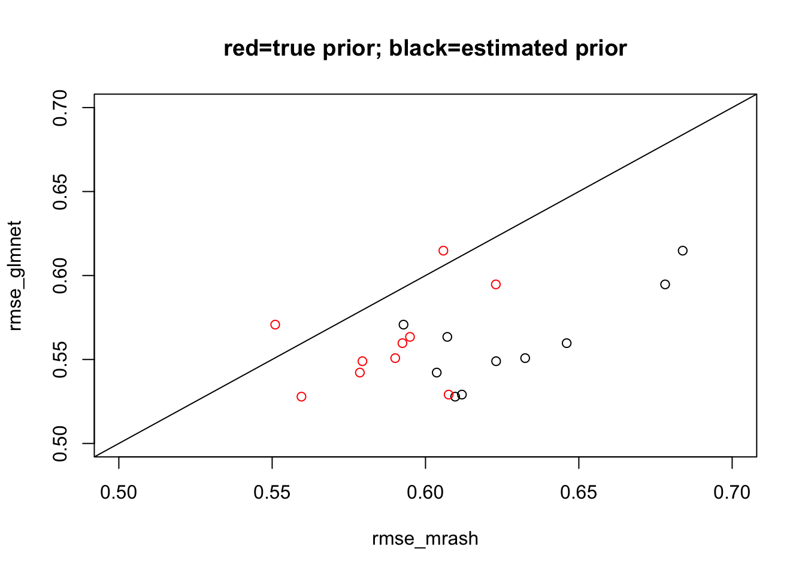
| Version | Author | Date |
|---|---|---|
| c94d7bf | Matthew Stephens | 2020-06-12 |
Since the resut is so consistently that mr.ash is worse than lasso here, I’ll initially just focus on the last of the simulations above.
The first thing I wanted to try was fixing the prior to the “true” value. I was suprised to find I actually needed to use the true beta to initialize in order to get good error. And the initialization really changes things, even with true fixed prior.
s2 = (sqrt((1-pve)/(pve))*sd(sim$Y))^2
fit_trueg <- mr.ash.alpha::mr.ash(sim$X, sim$Y,standardize = FALSE, sa2 = c(0,1/s2), pi=c(0.5,0.5), sigma2 = s2, update.pi=FALSE, update.sigma2 = FALSE, intercept=FALSE,min.iter=100)Warning in mr.ash.alpha::mr.ash(sim$X, sim$Y, standardize = FALSE, sa2 = c(0, :
The mixture proportion associated with the largest prior variance is greater
than zero; this indicates that the model fit could be improved by using a larger
setting of the prior variance. Consider increasing the range of the variances
"sa2".fit_trueg.inittrueb <- mr.ash.alpha::mr.ash(sim$X, sim$Y,standardize = FALSE, sa2 = c(0,1/s2), beta.init=sim$B, pi=c(0.5,0.5), sigma2 = s2, update.pi=FALSE, update.sigma2 = FALSE, intercept = FALSE)Warning in mr.ash.alpha::mr.ash(sim$X, sim$Y, standardize = FALSE, sa2 = c(0, :
The mixture proportion associated with the largest prior variance is greater
than zero; this indicates that the model fit could be improved by using a larger
setting of the prior variance. Consider increasing the range of the variances
"sa2".sqrt(mean((sim$B-fit_trueg$beta)^2))[1] 0.5782072sqrt(mean((sim$B-fit_trueg.inittrueb$beta)^2))[1] 0.441107plot(fit_trueg$beta, fit_trueg.inittrueb$beta)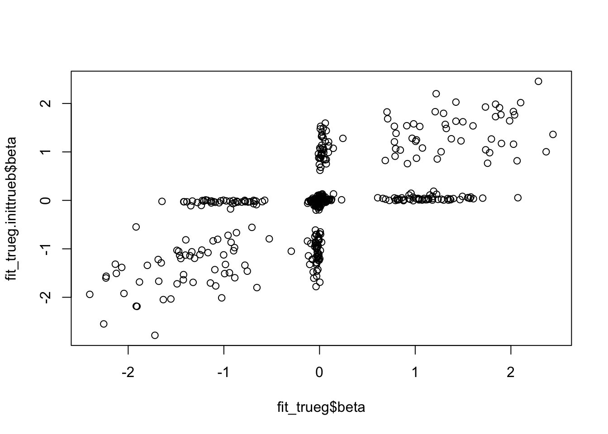
Reassuringly, the better solution also has better objective (but only slightly).
min(fit_trueg$varobj)[1] 2195.987min(fit_trueg.inittrueb$varobj)[1] 2184.777Try running longer. Note that now the worse solution has better objective… unfortunate! One caveat is that, after discussion, it seems that the computation of the variational objective may be unreliable for fixed g.
fit_trueg_long <- mr.ash.alpha::mr.ash(sim$X, sim$Y,standardize = FALSE, sa2 = c(0,1/s2), pi=c(0.5,0.5), sigma2 = s2, update.pi=FALSE, update.sigma2 = FALSE, intercept=FALSE,min.iter=1000)Warning in mr.ash.alpha::mr.ash(sim$X, sim$Y, standardize = FALSE, sa2 = c(0, :
The mixture proportion associated with the largest prior variance is greater
than zero; this indicates that the model fit could be improved by using a larger
setting of the prior variance. Consider increasing the range of the variances
"sa2".fit_trueg.inittrueb_long <- mr.ash.alpha::mr.ash(sim$X, sim$Y,standardize = FALSE, sa2 = c(0,1/s2), beta.init=sim$B, pi=c(0.5,0.5), sigma2 = s2, update.pi=FALSE, update.sigma2 = FALSE, intercept = FALSE,min.iter=1000)Warning in mr.ash.alpha::mr.ash(sim$X, sim$Y, standardize = FALSE, sa2 = c(0, :
The mixture proportion associated with the largest prior variance is greater
than zero; this indicates that the model fit could be improved by using a larger
setting of the prior variance. Consider increasing the range of the variances
"sa2".min(fit_trueg_long$varobj)[1] 2161.257min(fit_trueg.inittrueb_long$varobj)[1] 2176.406sqrt(mean((sim$B-fit_trueg_long$beta)^2))[1] 0.5794779sqrt(mean((sim$B-fit_trueg.inittrueb_long$beta)^2))[1] 0.4648454sqrt(mean((sim$B-coef(fit_glmnet)[-1])^2))[1] 0.5278743sqrt(mean((sim$B-fit_mrash$beta)^2))[1] 0.6096672Here I investigate some ideas to try to get the mr.ash prior to fit the lasso prior.
First I will compute the values of \(\tilde{b}\), which, algorithmically, are the values of \(b\) before shrinkage (soft-thresholding) is applied to them. I’m going to look at the shrinkage factors, which I define to be \(f:=b/\tilde{b}\).
y = sim$Y
X = sim$X
d = colSums(X^2)
b = coef(fit_glmnet)[-1]
r = y-sim$X %*% b - coef(fit_glmnet)[1]
btilde = drop((t(X) %*% r)/d) + b
plot(btilde,b, main="btilde vs b from lasso")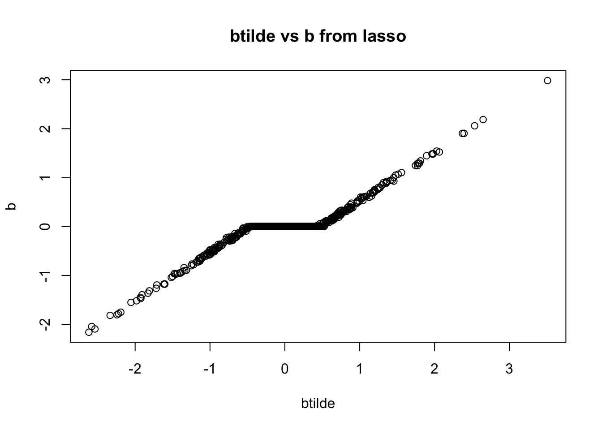
hist(b/btilde,nclass=100, main = "histogram of shrinkage factors from lasso fit")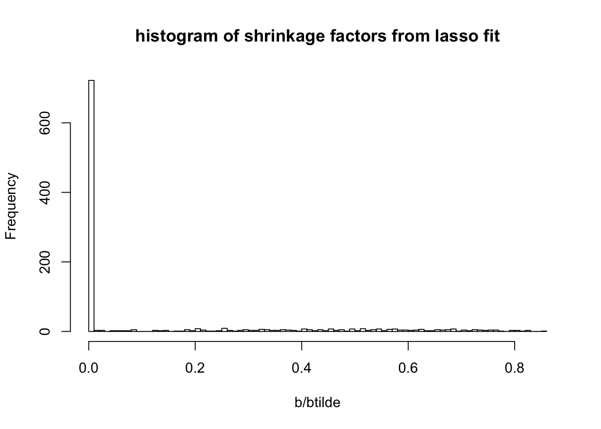
We want to try to select a prior such that the mr ash shrinkage operator is similar to the lasso. Intuitively that will ensure that the first mr ash update step does not change the solution “very much”. Ideally one might select \(g\) to minimize \(b-S_g(btilde)\).
THe mr ash shrinkage operator is the average of many ridge regression shrinkage operators. In ridge regression, with prior sa2 s2 the shrinkage factor for a variable \(j\) is \(f_j = sa2/(sa2 + 1/d_j)\), where \(d_j = x_j'x_j\).
Rearranging, and writing the shrinkage factor as \(f\), \((d sa2 + 1) f_j = d_j sa2\) or \[sa2 = f_j/[d_j(1-f)]\]
To get a quick approximation of what \(g\) might be we take the empirical values for sa2 computed in this way from the shrinkage factors. To give a grid I then cluster these empirical values into quantiles and give them equal weights in the prior. I deal separately with shrinkage factor 0.
f = b/btilde
sa2 = f/(d*(1-f))
hist(sa2)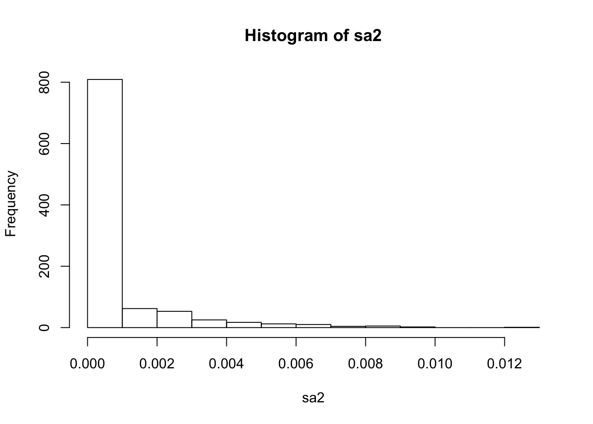
pi0 = mean(sa2==0)
sa2 = sa2[sa2!=0] # deal with zeros separately
sa2 = as.vector(quantile(sa2,seq(0,1,length=20)))
sa2 = c(0,sa2)
w = c(pi0, (1-pi0)*rep(1/20,20))Here I write code to compute posterior mean under normal means model with given prior variances and data variances. (Note the prior variances here not scaled by data variances.)
softmax = function(x){
x = x- max(x)
y = exp(x)
return(y/sum(y))
}
postmean = function(b, w, prior_variances, data_variance){
total_var = prior_variances + data_variance
loglik = -0.5* log(total_var) + dnorm(outer(sqrt(1/total_var),b,FUN="*"),log=TRUE) # K by p matrix
log_post = loglik + log(w)
phi = apply(log_post, 2, softmax)
mu = outer(prior_variances/total_var,b)
return(colSums(phi*mu))
}Now check if our prior reproduces the lasso shrinkage approximately. It does!
plot(btilde,b, main="comparison of mr.ash shrinkage (red) with soft thresholding")
lines(sort(btilde),postmean(sort(btilde), w, prior_variances = s2*sa2, data_variance = s2/median(d)),col=2,lwd=2)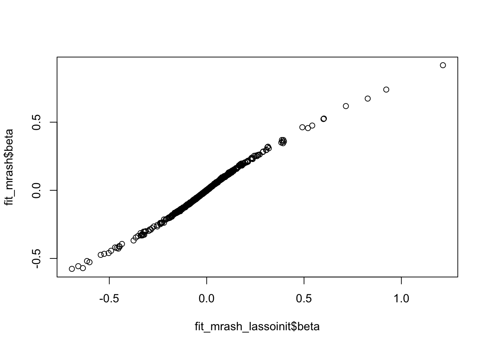
Somewhat unexpectedly though, initializing here has no effect
fit_mrash = mr.ash.alpha::mr.ash(sim$X, sim$Y,standardize = FALSE)
fit_mrash_lassoinit <- mr.ash.alpha::mr.ash(sim$X, sim$Y,standardize = FALSE, beta.init = b, sa2 = sa2, pi=w, sigma2=s2)Warning in mr.ash.alpha::mr.ash(sim$X, sim$Y, standardize = FALSE, beta.init
= b, : The mixture proportion associated with the largest prior variance is
greater than zero; this indicates that the model fit could be improved by using
a larger setting of the prior variance. Consider increasing the range of the
variances "sa2".plot(fit_mrash_lassoinit$beta,fit_mrash$beta)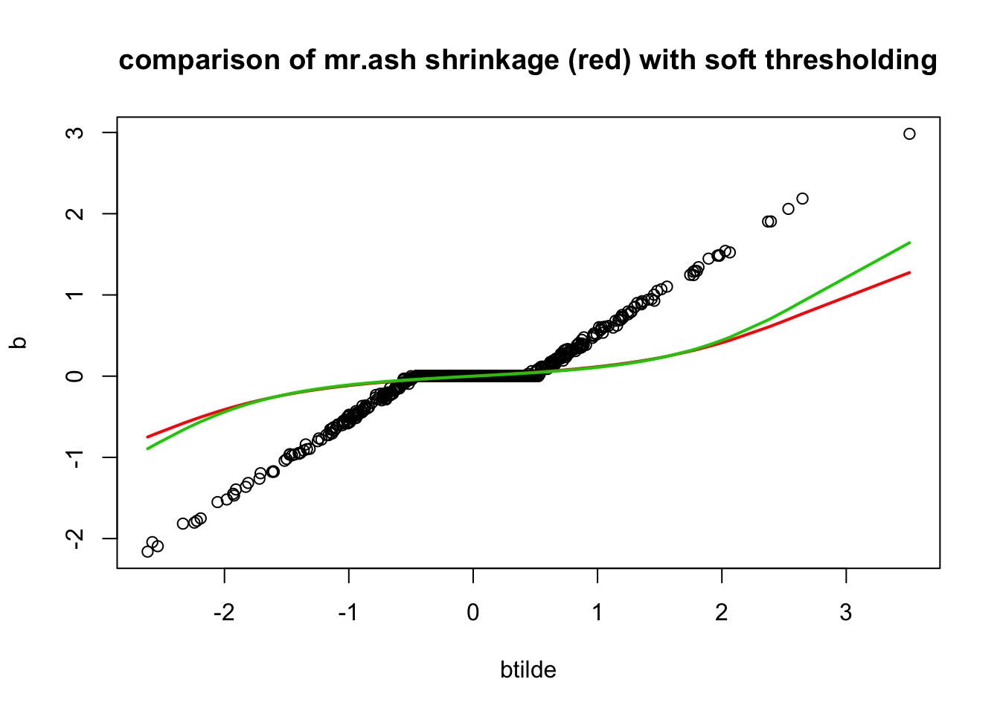
sqrt(mean((sim$B-fit_mrash_lassoinit$beta)^2))[1] 0.6073579sqrt(mean((sim$B-fit_mrash$beta)^2))[1] 0.6096672min(fit_mrash$varobj)[1] 2210.826min(fit_mrash_lassoinit$varobj)[1] 2210.982Plot the learned mr.mash shrinkage operators:
plot(btilde,b, main="comparison of mr.ash shrinkage (red) with soft thresholding")
lines(sort(btilde),postmean(sort(btilde), as.vector(fit_mrash$pi), prior_variances = fit_mrash$sigma2*fit_mrash$data$sa2, data_variance = fit_mrash$sigma2/median(d)),col=2,lwd=2)
lines(sort(btilde),postmean(sort(btilde), as.vector(fit_mrash_lassoinit$pi), prior_variances = fit_mrash_lassoinit$sigma2*fit_mrash_lassoinit$data$sa2, data_variance = fit_mrash_lassoinit$sigma2/median(d)),col=3,lwd=2)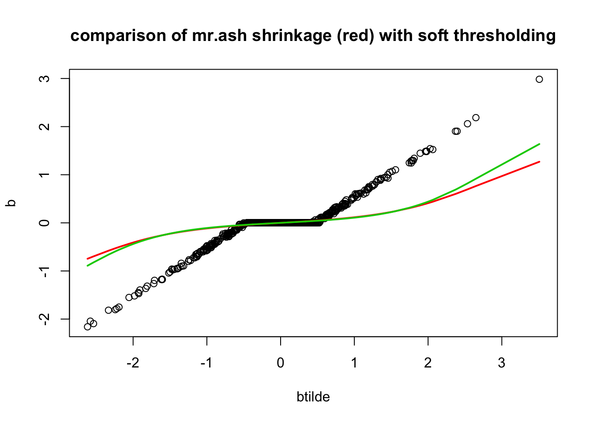
Interestingly the fitted pi from lasso intialization is almost identical to the one used in lasso. So actually the prior is the same! It is the sigma2 that must be different….
plot(fit_mrash_lassoinit$pi,w)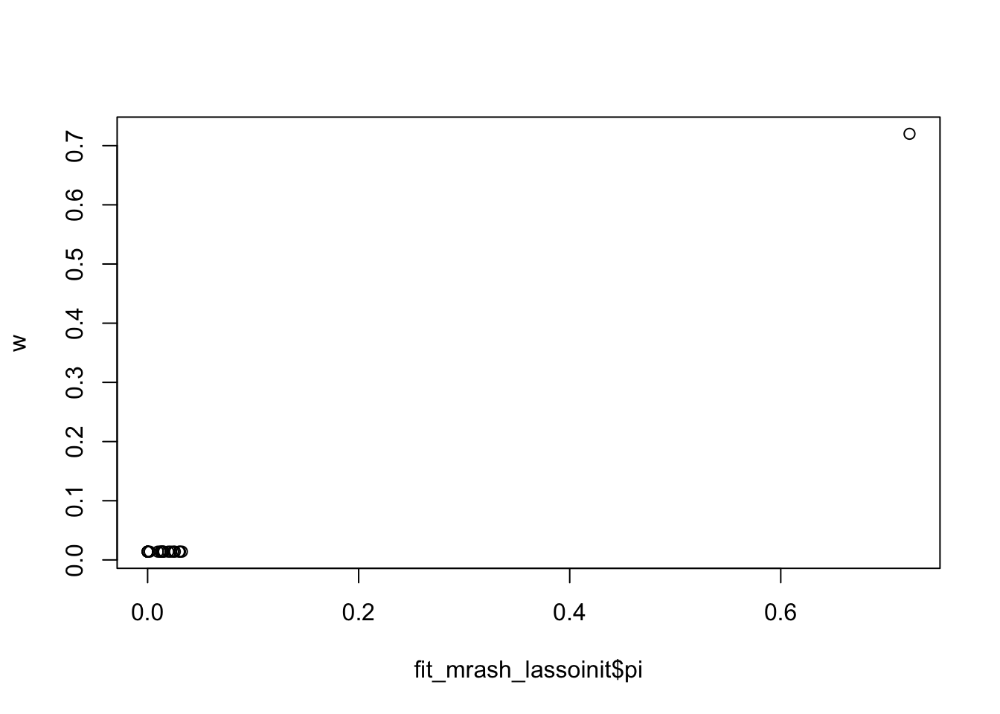
So here I fix sigma2:
fit_mrash_lassoinit_fixs2 <- mr.ash.alpha::mr.ash(sim$X, sim$Y,standardize = FALSE, beta.init = b, sa2 = sa2, pi=w, sigma2=s2, update.sigma2 = FALSE)Warning in mr.ash.alpha::mr.ash(sim$X, sim$Y, standardize = FALSE, beta.init
= b, : The mixture proportion associated with the largest prior variance is
greater than zero; this indicates that the model fit could be improved by using
a larger setting of the prior variance. Consider increasing the range of the
variances "sa2".sqrt(mean((sim$B-fit_mrash_lassoinit_fixs2$beta)^2))[1] 0.4895238And now initialize from that fit:
fit_mrash_lassoinit_relaxs2 <- mr.ash.alpha::mr.ash(sim$X, sim$Y,standardize = FALSE, beta.init = fit_mrash_lassoinit_fixs2$beta, sa2 = fit_mrash_lassoinit_fixs2$data$sa2, pi=fit_mrash_lassoinit_fixs2$pi, sigma2=fit_mrash_lassoinit_fixs2$sigma2)Warning in mr.ash.alpha::mr.ash(sim$X, sim$Y, standardize = FALSE, beta.init
= fit_mrash_lassoinit_fixs2$beta, : The mixture proportion associated with the
largest prior variance is greater than zero; this indicates that the model fit
could be improved by using a larger setting of the prior variance. Consider
increasing the range of the variances "sa2".sqrt(mean((sim$B-fit_mrash_lassoinit_relaxs2$beta)^2))[1] 0.5878012min(fit_mrash_lassoinit_relaxs2$varobj)[1] 2215.324min(fit_mrash_lassoinit_fixs2$varobj)[1] 2464.856One of the challenges is that the mr ash shrinkage operator is not a special case of lasso. In contrast, the ridge shrinkage operator is a special case. So it is easier to initialize from that.
Here i wanted to try this.
fit_ridge <- cv.glmnet(x=sim$X, y=sim$Y, family="gaussian", alpha=0, standardize=FALSE)
b = coef(fit_ridge)[-1]
r = y-sim$X %*% b - coef(fit_ridge)[1]
btilde = drop((t(X) %*% r)/d) + b
plot(btilde,b, main="btilde vs b from ridge")
abline(a=0,b=1)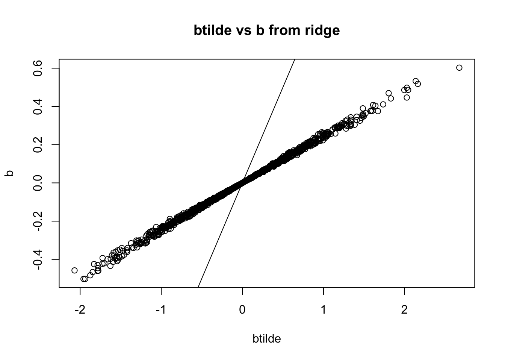
hist(b/btilde,nclass=100, main = "histogram of shrinkage factors from ridge fit")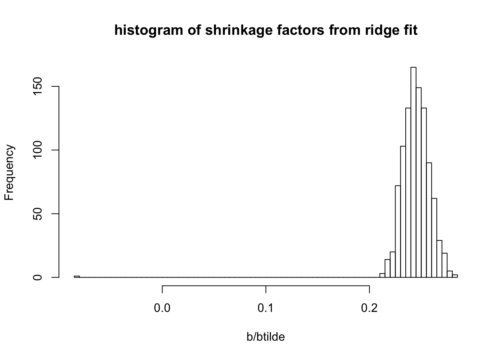
sqrt(mean((sim$B-b)^2))[1] 0.5908821
sessionInfo()R version 3.6.0 (2019-04-26)
Platform: x86_64-apple-darwin15.6.0 (64-bit)
Running under: macOS Mojave 10.14.6
Matrix products: default
BLAS: /Library/Frameworks/R.framework/Versions/3.6/Resources/lib/libRblas.0.dylib
LAPACK: /Library/Frameworks/R.framework/Versions/3.6/Resources/lib/libRlapack.dylib
locale:
[1] en_US.UTF-8/en_US.UTF-8/en_US.UTF-8/C/en_US.UTF-8/en_US.UTF-8
attached base packages:
[1] stats graphics grDevices utils datasets methods base
other attached packages:
[1] glmnet_3.0-2 Matrix_1.2-18 mr.ash.alpha_0.1-34
loaded via a namespace (and not attached):
[1] Rcpp_1.0.4.6 knitr_1.28 whisker_0.4 magrittr_1.5
[5] workflowr_1.6.1 lattice_0.20-40 R6_2.4.1 rlang_0.4.5
[9] foreach_1.4.8 stringr_1.4.0 tools_3.6.0 grid_3.6.0
[13] xfun_0.12 git2r_0.26.1 iterators_1.0.12 htmltools_0.4.0
[17] yaml_2.2.1 digest_0.6.25 rprojroot_1.3-2 later_1.0.0
[21] codetools_0.2-16 promises_1.1.0 fs_1.3.2 shape_1.4.4
[25] glue_1.4.0 evaluate_0.14 rmarkdown_2.1 stringi_1.4.6
[29] compiler_3.6.0 backports_1.1.5 httpuv_1.5.2